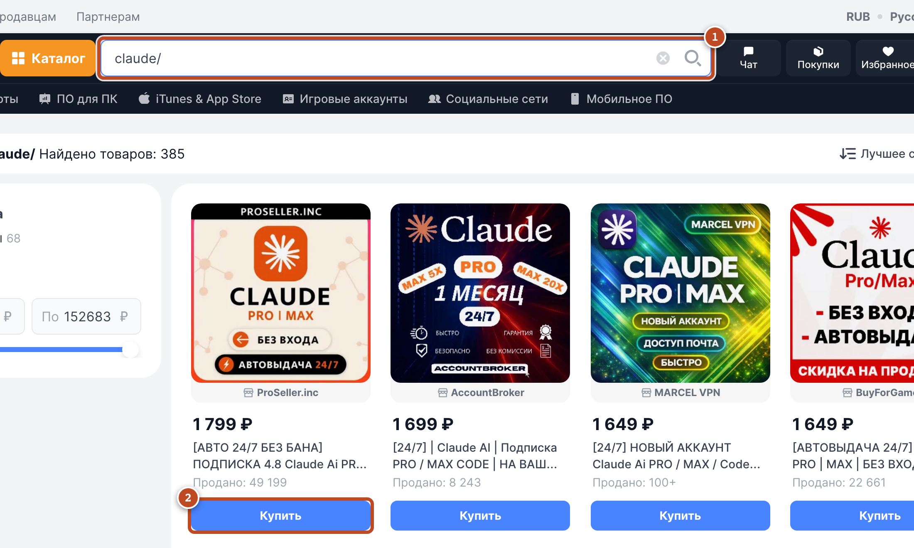
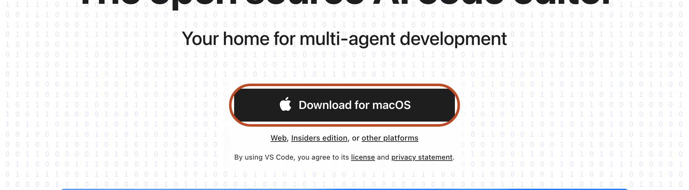
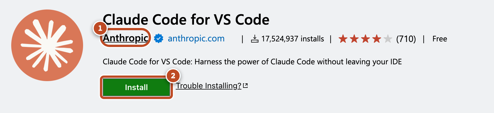
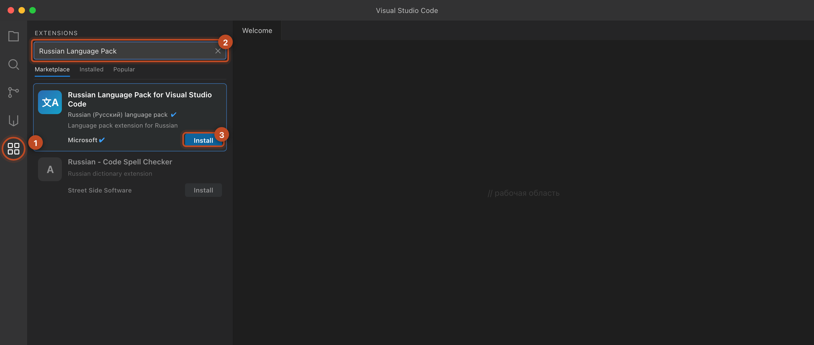
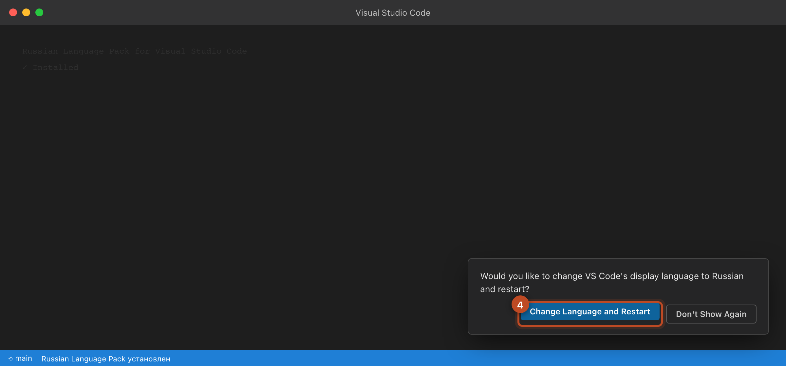

Старт · Установка с нуля
Старт · Claude Code
Установка с нуля: Claude Code из России за один вечер
Это пошаговая инструкция с нуля. На каждый шаг живой скриншот и анимация, где красным кольцом показано, куда именно нажимать. Заблудиться негде. К концу вечера у тебя на компьютере стоит Claude с оплаченной подпиской, и ты своими словами собрал им первую страницу. Без терминала и без программирования, английский тоже не нужен. Полтора часа времени, обычный Mac или Windows, и ты внутри
Что это вообще такое
Не чат с вопросами, а сотрудник, который делает работу
Большинство людей знают Claude как чат: задал вопрос, получил ответ. Это процентов пять его силы. Claude Code это та же модель, только она живёт у тебя на компьютере и умеет делать. Ставишь задачу обычными словами на русском, и он сам пишет, собирает, складывает файлы и показывает результат
Поэтому я и называю это не «нейросетью», а сотрудником. Ты не пишешь код и не учишь команды. Ты объясняешь словами, что нужно, как объяснил бы человеку. Сегодня мы пройдём весь путь: поставим этого сотрудника на твой компьютер и тут же дадим первое задание, чтобы ты своими глазами увидел, что всё работает
Как читать гайд: красное кольцо на скриншоте и жёлтое кольцо в анимации это «нажми сюда». Просто повторяй за картинкой, шаг за шагом. Не торопись, ничего сломать нельзя
Карта вечера
Весь маршрут на одной странице
Чтобы ты держал картинку целиком, вот весь маршрут. Ставим самого Claude: аккаунт с подпиской, программа VS Code, расширение Claude, русский интерфейс, вход и первая страница, собранная одним предложением. Семь шагов, каждый по скриншоту
Перед стартом
Что понадобится
Всё, что нужно, у тебя либо уже есть, либо стоит как пара чашек кофе в месяц
Компьютер
Mac или Windows, обычный, не игровой. Телефон не подойдёт, нужна именно машина-компьютер
Около полутора часов
Один спокойный вечер. Все шаги это скачать, нажать, вставить по картинкам
Две бесплатные программы
VS Code и расширение Claude. Оба ставятся как обычное приложение
Одна подписка
Аккаунт Claude с подпиской, оплачивается российской картой. Как именно, в первом шаге
Шаг 1 / Доступ
Аккаунт и подписка из России
Самый частый страх: «из России же не получится, всё заблокировано». Скажу честно, как есть. Напрямую сейчас не зарегистрироваться: сайт Claude не открывается с российских IP, на российский номер регистрация не проходит, карты режет антифрод. Поэтому рабочий путь один и проверенный: взять готовый аккаунт с уже оплаченной подпиской на маркетплейсе цифровых товаров. Аккаунт уже привязан продавцом к нужному региону, тебе остаётся только войти. Я сам начинал именно так

Делаем по шагам
- Открой сайт plati.market (Плати Маркет), площадку цифровых товаров за рубли
- В строку поиска наверху впиши claude и нажми поиск
- Выбери карточку, где есть слово Pro (подписка Claude Pro). Смотри на отзывы и число продаж, бери продавца с хорошими, и желательно с авто-выдачей и заменой при сбое
- Нажми «Купить» и оплати российской картой прямо на странице
- После оплаты ты получишь логин и пароль от готового аккаунта. Сохрани их, они понадобятся на Шаге 5
Pro, около $20 (~1600-2200 ₽)
На старт этого хватает с запасом. Бери его первым
Max, от ~8 тыс ₽
Берёшь позже, когда начнёшь делать серьёзно. У Max два уровня: 5x около $100 и 20x около $200. Это уже команда сотрудников за цену одного дня работы дизайнера
Подписка стоит как ужин в кафе, а делает работу, за которую раньше платили подрядчику. На старт хватает Pro, дороже имеет смысл только когда на этом уже зарабатываешь
Чтобы аккаунт жил долго. Главная причина блокировок это резкая смена страны, IP и пароля на рабочем аккаунте. Просто не трогай эти настройки без нужды, и аккаунт спокойно работает. Логин и пароль сохрани отдельно: если что-то собьётся, нормальный продавец меняет доступ по запросу. Поэтому и берём продавца с поддержкой и заменой
Слышал про «кредиты Claude Code с 15 июня»? Это изменение поставили на паузу, оно не вступило в силу. Работа в расширении внутри VS Code (ровно наш сценарий) по-прежнему идёт по лимитам твоей подписки, ничего доплачивать сверху не нужно
Шаг 2 / Программа
Поставить VS Code
VS Code это бесплатная рабочая программа, что-то вроде тетради для проектов: слева файлы, справа место для твоего ИИ-сотрудника. Звучит как «программа для программистов», но кода ты не увидишь, пока сам не попросишь. Ставится как любое приложение

Делаем по шагам
- Зайди на code.visualstudio.com
- Нажми большую кнопку Download посередине, файл начнёт скачиваться
- На Windows: открой скачанный файл двойным кликом → жми Next, потом ещё Next, в конце Finish
- На Mac: открой скачанный файл → перетащи значок «Visual Studio Code» в папку «Программы» → запусти его. Если выскочит «открыть несмотря на разработчика», нажми «Открыть»
- Программа открылась, на этом Шаг 2 закончен
Скачивай только с сайта code.visualstudio.com, не с рекламы в поиске и не со сторонних сборок. Программа бесплатная и официальная
Шаг 3 / Сотрудник
Поставить Claude внутрь VS Code
Это главный шаг, и тут чаще всего теряются. Сейчас покажу прямо на анимации, куда вести мышкой. Claude встаёт внутрь VS Code как дополнение, в три клика. Смотри: жёлтое кольцо это «нажми сюда»
// ты пишешь словами, он собирает
↑ Анимация повторяется по кругу. Просто веди мышкой туда же, куда едет белый курсор
Делаем по шагам
- Слева в VS Code есть узкая полоска с иконками. Найди иконку из четырёх квадратиков и нажми её, это «Расширения»
- Сверху появится строка поиска. Впиши туда Claude Code
- В списке найди карточку, где издатель Anthropic (с синей галочкой). Это важно: бери только Anthropic, под именем «Claude» бывают подделки
- Нажми на карточке зелёную кнопку Install («Установить»)
- Если VS Code попросит, нажми Reload («Перезагрузить окно»). Готово: в VS Code появится иконка Spark (оранжевая ✱), через неё будем входить на Шаге 5
Как убедиться, что это настоящий Claude
Вот так выглядит правильная карточка. Один ориентир: издатель Anthropic с синей галочкой, под ней миллионы установок. Если издатель другой, это не то, закрывай и ищи Anthropic

Только издатель Anthropic. Это единственное место, где можно поставить не то. Сверь имя издателя, и всё правильно. Сломать ничего нельзя: расширение ставится и удаляется как обычная программа
Шаг 4 / По-русски
Сделать интерфейс на русском
Сразу после установки весь VS Code будет на английском, и именно это пугает новичка сильнее всего. Чинится за пару минут. Ставишь ещё одно бесплатное расширение от Microsoft, и программа становится полностью русской: меню, кнопки, подсказки. Делать это не обязательно, Claude и без того понимает русский, но с русским интерфейсом спокойнее, ничего не теряется
VS Code не предлагает русский сам и в настройках его нет, это нормально. Русский ставится отдельным расширением, ровно так же, как ты ставил Claude в Шаге 3

Делаем по шагам
- Слева нажми ту же иконку из четырёх квадратиков, «Расширения», как в Шаге 3
- В строку поиска впиши Russian Language Pack
- Выбери карточку, где издатель Microsoft (Russian Language Pack for Visual Studio Code)
- Нажми синюю кнопку Install («Установить»)
- Внизу справа выскочит окошко, нажми в нём Change Language and Restart. VS Code перезапустится уже на русском

Если окошко не появилось: нажми Cmd+Shift+P (на Windows Ctrl+Shift+P), впиши Configure Display Language, выбери в списке русский (ru) и перезапусти VS Code. Передумаешь, там же можно так же вернуть English
Шаг 5 / Вход
Войти по подписке
Теперь подключаем тот аккаунт, что ты купил на Шаге 1. Никаких ключей и кодов: обычный вход логином и паролем
- Нажми иконку Spark (оранжевая ✱). Она в правом верхнем углу редактора (видна, когда открыт хотя бы один файл) или внизу справа в строке состояния как ✱ Claude Code. Откроется панель Claude
- В панели нажми Sign in («Войти»). Откроется окно входа, введи логин и пароль от аккаунта Claude, те, что пришли с Плати после оплаты
- Подтверди вход (кнопка Allow или «Разрешить»). Система скажет, что всё получилось
- Вернись в VS Code, панель Claude готова к работе
Не видишь иконку Spark? Открой любой файл, она показывается только при открытом файле. Или нажми Cmd/Ctrl+Shift+P, впиши Developer: Reload Window и нажми Enter. Видишь надпись «Not logged in» или «Please run /login», значит просто ещё не нажал Sign in, сделай вход и возвращайся
Про VPN. Аккаунт ты взял уже привязанным к нужному региону, и именно поэтому ничего крутить с сетью не надо. Не меняй на рабочем аккаунте страну и IP без причины: резкая смена это и есть главный триггер блокировок. Если вход с первого раза не прошёл, не торопись менять настройки, сначала напиши продавцу, у которого покупал
Шаг 6 / Рабочее место
Открыть рабочую папку
Claude нужно место, куда складывать то, что он соберёт. Это обязательный шаг, без открытой папки ему некуда работать
- В меню сверху нажми File, потом Open Folder («Открыть папку»)
- Создай новую пустую папку, например claude-demo на рабочем столе
- Выбери эту папку и нажми «Открыть». Готово
Имя папки английскими буквами, без пробелов и русских букв. Это снимает почти все мелкие сбои, когда «файл не открывается»
Шаг 7 / Первая победа
Первый результат одним предложением
А теперь сама проверка, и сразу первая победа. Никаких команд учить не надо. Пишешь Claude обычными словами на русском, как другу, и он собирает настоящую страницу. Вот как это выглядит
Скопируй эту фразу в панель Claude
сделай красивую современную страницу-визитку: моё имя по центру, короткая подпись под ним и кнопка, тёплые цвета и приятный шрифт
- Вставь фразу выше в панель Claude и нажми Enter
- Claude покажет, что собрал, нажми Accept («Принять»)
- Открой результат: правый клик по файлу .html → Show in Folder → двойной клик. Страница откроется в браузере
На экране настоящая страница, которую ты сделал одним предложением на русском. Ни строчки кода ты не написал. Вот это и есть вся «техника», которую нужно знать: можешь объяснить другу, сможешь объяснить Claude. Claude стоит и работает. Дальше разворачиваем вокруг него рабочую систему
Если застрял
Симптом, что нажать
| Что видишь | Что делать |
|---|---|
| Поставил не то расширение | Удали и поставь только то, где издатель Anthropic, под именем «Claude» есть подделки |
| Не найду, где войти в Claude | Открой любой файл, иконка Spark (✱) показывается только при открытом файле; или Cmd/Ctrl+Shift+P → Developer: Reload Window |
| Пишет «Not logged in» / «Please run /login» | Сначала нажми Sign in и войди логином-паролем, потом возвращайся к запросу |
| Вход не проходит из России | Не меняй на аккаунте страну и IP, аккаунт уже привязан к региону. Не вышло с первого раза, напиши продавцу на Плати, у него замена |
| Claude «не видит» файл | Сохрани файл, Cmd+S на Mac, Ctrl+S на Windows, и спроси снова |
| Файл не открывается из браузера | Папка с русскими буквами или пробелами, перенеси проект в папку с английским именем |
| Интерфейс остался английским | Cmd/Ctrl+Shift+P → Configure Display Language → выбери русский (ru) и перезапусти VS Code |
Главный приём: застрял, спроси самого Claude. Скопируй текст ошибки и напиши: «у меня такая ошибка: … объясни простыми словами и исправь». В большинстве случаев он разберётся сам. Застрять навсегда тут невозможно, у тебя в панели всегда есть, кого спросить
Готовность
Шесть галочек, и ты в деле
- ☐
Аккаунт Claude куплен на Плати, подписка активна
- ☐
VS Code установлен и открывается
- ☐
Расширение Claude Code (издатель Anthropic) стоит, иконка Spark видна
- ☐
Интерфейс на русском, поставлен Russian Language Pack от Microsoft (по желанию)
- ☐
Вход сделан, Claude отвечает в панели
- ☐
Первая страница-визитка собрана и открылась в браузере
Отметил все шесть, у тебя на компьютере стоит твой первый ИИ-сотрудник на родном языке, ты вошёл по подписке и своими словами собрал первую страницу. Claude готов к работе